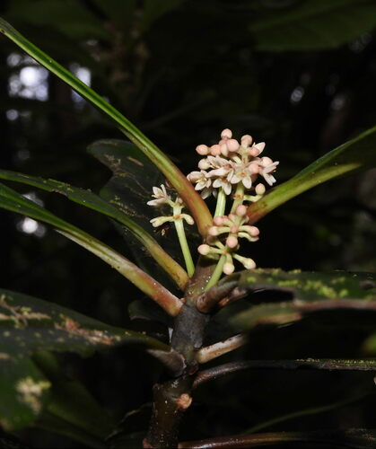

Phellinaceae
The Phellinaceae family is a small family of flowering plants belonging to the order Asterales. It contains only a single genus, Phelline, which comprises about 10-12 species of evergreen shrubs and trees. The entire family is endemic to New Caledonia, an island archipelago in the Pacific Ocean known for its unique and ancient flora. Phellinaceae occupies an important phylogenetic position near the base of the Asterales order.
Overview
Phellinaceae is a monogeneric family (containing only the genus Phelline) restricted entirely to the island of New Caledonia. These plants are woody, evergreen shrubs or trees found in various habitats across the island, particularly in maquis shrubland and forests, often on ultramafic soils characteristic of the region.
The family's placement is within the large and diverse Asterales order, which also includes giants like the Asteraceae (sunflower family) and Campanulaceae (bellflower family). However, Phellinaceae represents one of the smaller, earlier diverging lineages within this order. Its phylogenetic relationships suggest connections to other small families like Alseuosmiaceae and Argophyllaceae, also found in the Southern Hemisphere, highlighting ancient Gondwanan connections.
Members of Phelline are characterized by their leathery, simple leaves, small flowers typically with 4-6 parts, and fleshy drupe fruits. Their restricted distribution and phylogenetic position make them significant for studies of island biogeography, plant evolution, and the diversification of the Asterales.
Quick Facts
- Scientific Name: Phellinaceae
- Common Name: (None widely established)
- Number of Genera: 1 (Phelline)
- Number of Species: Approximately 10-12
- Distribution: Endemic to New Caledonia
- Evolutionary Group: Eudicots - Asterids - Asterales
Key Characteristics
Growth Form and Habit
Plants are evergreen shrubs or small to medium-sized trees with woody stems.
Leaves
Leaves are typically alternate, though sometimes appearing whorled or clustered at the ends of branches. They are simple, with margins that are usually entire (smooth) but occasionally toothed. The texture is often leathery (coriaceous). Stipules are absent.
Inflorescence
Flowers are borne in axillary or terminal clusters, typically arranged in cymes or panicles, although sometimes flowers may be solitary.
Flowers
Flowers are generally small, actinomorphic (radially symmetrical), and can be bisexual or unisexual (with plants being dioecious or polygamous - having both bisexual and unisexual flowers). Key features include:
- Calyx: Consists of 4-6 sepals, usually small and fused at the base, persistent in fruit.
- Corolla: Consists of 4-6 petals, which are free or slightly fused at the base, often somewhat fleshy, and typically whitish, yellowish, or greenish.
- Androecium: Features 4-6 stamens, alternating with the petals. Filaments are often short, and anthers dehisce via longitudinal slits.
- Gynoecium: Features a superior ovary composed of 2-5 fused carpels, forming an equal number of locules (chambers). Each locule contains a single ovule attached near the apex. The style is simple or shortly lobed.
Fruits and Seeds
The fruit is a drupe – a fleshy fruit with one or more hard stony pits (pyrenes) enclosing the seeds. Drupes are typically small and contain 1 to few seeds.
Chemical Characteristics
Like many members of the Asterales, Phellinaceae species are known to produce iridoids. Some species are also noted for accumulating aluminum from the soil, a common trait for plants adapted to the ultramafic soils of New Caledonia.
Field Identification
Identifying Phelline species, the sole members of Phellinaceae, requires recognizing their characteristics within the unique flora of New Caledonia:
Primary Identification Features
- Habit: Evergreen woody shrubs or trees.
- Leaves: Alternate (or appearing clustered), simple, usually entire, leathery texture, no stipules.
- Flowers: Small, typically with 4-6 sepals, 4-6 petals, and 4-6 stamens alternating with petals.
- Ovary: Superior, composed of 2-5 fused carpels.
- Fruit: A small drupe (fleshy with stony pit/s).
- Location: Must be found in New Caledonia, as the family is endemic.
Secondary Identification Features
- Flowers often in cymes or panicles.
- Often found in maquis or forest habitats, frequently on ultramafic soils.
Seasonal Identification Tips
- Flowering and fruiting times vary among the different Phelline species and depend on local conditions.
- The evergreen, leathery leaves are present year-round.
Common Confusion Points
Within New Caledonia, Phelline might be confused with members of other woody plant families sharing similar habitats. Distinguishing features include:
- Aquifoliaceae (Ilex): Also has alternate, simple leaves and drupes, but flowers usually have petals fused at the base and stamens attached to the corolla tube.
- Escalloniaceae: Can have alternate simple leaves, but often has glandular teeth, and fruit is typically a capsule, not a drupe.
- Other Asterales families (e.g., Rousseaceae): Require detailed examination of floral formula, ovary structure, and fruit type for accurate differentiation.
- Careful observation of the flower part numbers (4-6), superior ovary with 2-5 carpels, stamen arrangement (alternating with petals), and drupaceous fruit is key.
Field Guide Quick Reference (Phelline / Phellinaceae)
Look For (in New Caledonia):
- Evergreen shrub or tree
- Leaves: Alternate, simple, leathery, no stipules
- Flowers: Small, 4-6 parts (sepals, petals, stamens)
- Stamens alternate with petals
- Ovary: Superior, 2-5 carpels
- Fruit: Drupe (small, fleshy)
Key Distinctions:
- Endemic to New Caledonia
- Combination of alternate leathery leaves, 4-6 parted flowers, superior ovary, and drupe fruit
- Different from Aquifoliaceae (stamen attachment)
- Different from Escalloniaceae (fruit type)
Notable Examples
The family contains only one genus, Phelline, endemic to New Caledonia.

Phelline species
This genus comprises all members of the Phellinaceae family, with around 10-12 species recognized. They are evergreen shrubs and trees exclusively found in New Caledonia, often adapted to the island's unique ultramafic soils. Species vary in leaf shape, flower size, and habitat preference but share the core family characteristics of alternate leathery leaves, small 4-6 parted flowers with a superior ovary, and drupaceous fruits.
Phylogeny and Classification
Phellinaceae is classified within the large order Asterales, which belongs to the Asterid clade of eudicots. Molecular phylogenetic studies place Phellinaceae near the base of the Asterales, suggesting it represents an early diverging lineage within the order.
Its precise relationships are still debated, but it is often grouped with or considered sister to other small Southern Hemisphere families like Alseuosmiaceae and Argophyllaceae. This grouping (sometimes including Rousseaceae and Campanulaceae) highlights ancient Gondwanan connections and diversification patterns early in the history of Asterales, long before the massive radiation of families like Asteraceae.
The family's isolated geographic distribution (New Caledonia) and phylogenetic position underscore its significance as a relictual lineage.
Position in Plant Phylogeny
- Kingdom: Plantae
- Clade: Angiosperms (Flowering plants)
- Clade: Eudicots
- Clade: Asterids
- Order: Asterales
- Family: Phellinaceae
Evolutionary Significance
Phellinaceae is evolutionarily important because:
- It represents a relictual lineage endemic to the ancient island flora of New Caledonia.
- Its position near the base of the Asterales order provides insights into the early evolution and diversification of this major plant group.
- It helps illustrate biogeographic patterns related to the breakup of Gondwana and the isolation of island floras.
- Studying its characteristics contributes to understanding ancestral traits within the Asterales.